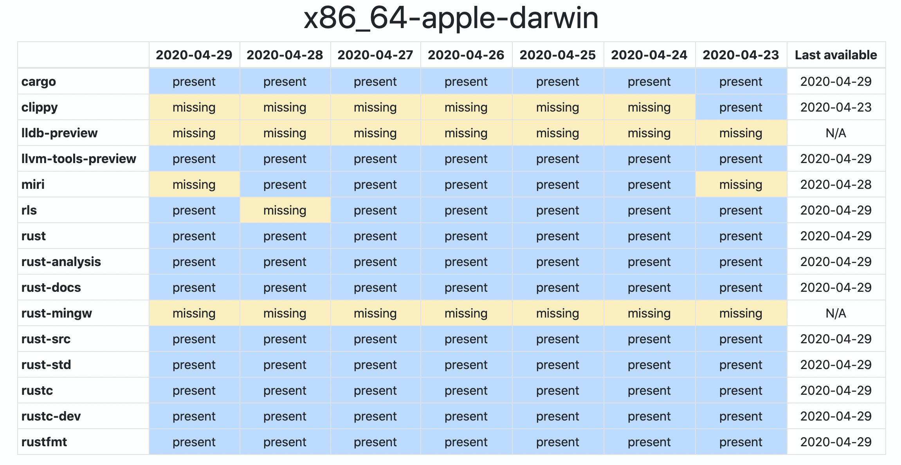

rust相关的工具如下图：
cargo：管理项目
clippy: 用来做代码提示， catch common mistakes and improve your Rust code。文档 https://rust-lang.github.io/rust-clippy/
rls: rust language server 。语言开发提示工具
rust-docs：rust终端文档
lldb:取代GDB，进行调试工具
llvm
miri
在进行cargo run时，提示下面的问题：
Blocking waiting for file lock on package cache
解决方法是
sudo pkill rls cargo
rm -rf ~/.cargo/registry/index/*
Rust 是由 Mozilla 研究室主导开发的一门现代系统编程语言，自 2015 年 5 月发布 1.0 之后，一直以每 6 周一个小版本的开发进度稳定向前推进。语言设计上跟 C++ 一样强调零开销抽象和 RAII。拥有极小的运行时和高效的 C 绑定，使其运行效率与 C/C++ 一个级别，非常适合对性能要求较高的系统编程领域。利用强大的类型系统和独特的生命周期管理实现了编译期内存管理，保证内存安全和线程安全的同时使编译后的程序运行速度极快，Rust 还提供函数式编程语言的模式匹配和类型推导，让程序写起来更简洁优雅。宏和基于 trait 的泛型机制让 Rust 的拥有非常强大的抽象能力，在实际工程中尤其是库的编写过程中可以少写很多 boilerplate 代码。
请注意pub关键字，它指示编译器使其他模块可以访问此函数
访问堆上的数据比访问栈上的数据慢，因为必须通过指针来访问
- 动态变量定义在堆上，返回地址的hash值；
- 必须在运行时向操作系统请求内存。 需要一个当我们处理完 String 时将内存返回给操作系统的方法
- 静态的可以定义在栈上
- 动态变量定义在堆上，返回地址的hash值；
在变量作用域在结束时，自动进行变量回收
- 在 C++ 中，这种 item 在生命周期结束时释放资源的模式有时被称作 资源获取即 初始化（Resource Acquisition Is Initialization (RAII)）
我们 也 不能在拥有不可变引用的同时拥有可变引用
1
2
3
4
5
6
7
8
9
10
11
12let mut s = String::from("hello"); let r1 = &s; // 没问题
let r2 = &s; // 没问题
let r3 = &mut s; // 大问题
println!("{}, {}, and {}", r1, r2, r3);
//
let mut s = String::from("hello");
let r1 = &s; // 没问题
let r2 = &s; // 没问题
println!("{} and {}", r1, r2); // 此位置之后 r1 和 r2 不再使用
let r3 = &mut s; // 没问题
println!("{}", r3);在任意给定时间，要么 只能有一个可变引用，要么 只能有多个不可变引用。 引用必须总是有效的。
数使用了字段初始化简写语法
我们也可以定义一个没有任何字段的结构体！它们被称为 类单元结构体（unit-like structs） 因为它们类似于 () ，即 unit 类型。类单元结构体常常在你想要在某个类型上实现 trait 但不 需要在类型中存储数据的时候发挥作用。
宏
声明（Declarative）宏，使用 macro_rules!，和三种 过程（Procedural）宏：
- 自定义 #[derive] 宏在结构体和枚举上指定通过 derive 属性添加的代码
- 类属性（Attribute）宏定义可用于任意项的自定义属性
- 类函数宏看起来像函数不过作用于作为参数传递的 token。
宏和函数的区别
- 从根本上来说，宏是一种为写其他代码而写代码的方式，即所谓的
元编程（metaprogramming） - 元编程对于减少大量编写和维护的代码是非常有用的，它也扮演了函数的角色。但宏有一些函数所没有的附加能力。
- 一个函数标签必须声明函数参数个数和类型。相比之下，宏只接受一个可变参数：用一个参数调用 println!(“hello”) 或用两个参数调用 println!(“hello {}”, name) 。而且，宏可以在编译器翻译代码前展开，例如，宏可以在一个给定类型上实现 trait 。而函数则不行，因为函数是在运行时被调用，同时 trait 需要在编译时实现。
- 实现一个宏而不是函数的消极面是宏定义要比函数定义更复杂，因为你正在编写生成 Rust 代码的 Rust 代码。由于这样的间接性，宏定义通常要比函数定义更难阅读、理解以及维护。
- 宏和函数的最后一个重要的区别是：在调用宏 之前 必须定义并将其引入作用域，而函数则可以在任何地方定义和调用。
- 从根本上来说，宏是一种为写其他代码而写代码的方式，即所谓的
使用 macro_rules! 的声明宏用于通用元编程
- Rust 最常用的宏形式是 声明宏（declarative macros）。它们有时也被称为 “macros by example”、“macro_rules! 宏” 或者就是 “macros”。其核心概念是，声明宏允许我们编写一些类似 Rust match 表达式的代码
- 因为宏模式所匹配的是 Rust 代码结构而不是值
- 首先，一对括号包含了全部模式。接下来是后跟一对括号的美元符号（ $ ），其通过替代代码捕获了符合括号内模式的值。$() 内则是 $x:expr ，其匹配 Rust 的任意表达式或给定 $x 名字的表达式。
- $() 之后的逗号说明一个逗号分隔符可以有选择的出现代码之后，这段代码与在 $() 中所捕获的代码相匹配。紧随逗号之后的 * 说明该模式匹配零个或多个 * 之前的任何模式。
- macro_rules! 中有一些奇怪的地方。在将来，会有第二种采用 macro 关键字的声明宏，其工作方式类似但修复了这些极端情况。在此之后，macro_rules! 实际上就过时（deprecated）了
1
2
3
4
5
6
7
8
9
10
11
12
13
14
15
16
17
18//vuc!宏定义简化版
//无论何时导入定义了宏的包，#[macro_export] 注解说明宏应该是可用的。 如果没有该注解，这个宏不能被引入作用域。
//此处有一个单边模式 ( $( $x:expr ),* )
//更复杂的宏会有多个单边模式。
//当以 vec![1, 2, 3]; 调用宏时，$x 模式与三个表达式 1、2 和 3 进行了三次匹配。
//现在让我们来看看这个出现在与此单边模式相关的代码块中的模式：在 $()* 部分中所生成的 temp_vec.push() 为在匹配到模式中的 $() 每一部分而生成。$x 由每个与之相匹配的表达式所替换。当以 vec![1, 2, 3]; 调用该宏时，替换该宏调用所生成的代码会是下面这样：
macro_rules! vec {
( $( $x:expr ),* ) => {
{
let mut temp_vec = Vec::new();
$(
temp_vec.push($x);
)*
temp_vec
}
};
}
用于从属性生成代码的过程宏
- 第二种形式的宏被称为 过程宏（procedural macros），因为它们更像函数（一种过程类型）。过程宏接收 Rust 代码作为输入，在这些代码上进行操作，然后产生另一些代码作为输出，而非像声明式宏那样匹配对应模式然后以另一部分代码替换当前代码。
- 有三种类型的过程宏（自定义 derive，类属性和类函数），不过它们的工作方式都类似。
- 当创建过程宏时，其定义必须位于一种特殊类型的属于它们自己的 crate 中。这么做出于复杂的技术原因，将来我们希望能够消除这些限制。
- 过程宏包含一个函数，这也是其得名的原因：“过程” 是 “函数” 的同义词。那么为何不叫 “函数宏” 呢？好吧，有一个过程宏是 “类函数” 的，叫成函数会产生混乱。无论如何，定义过程宏的函数接受一个 TokenStream 作为输入并产生一个 TokenStream 作为输出。这也就是宏的核心：宏所处理的源代码组成了输入 TokenStream，同时宏生成的代码是输出 TokenStream。最后，函数上有一个属性；这个属性表明过程宏的类型。在同一 crate 中可以有多种的过程宏。
通过 #[derive] 属性，编译器能够提供某些 trait 的基本实现。如果 需要更复杂的行为，这些 trait 也可以手动实现
trait
- trait可以翻译为“特征”、“特点”、“特性”
- 所有的trait中，都有一个隐藏的类型Self(大写S)，代表当前这个实现了此接口的具体类型。
- trait中定义的函数，也可以称作关联函数(associated function)。函数的第一个参数如果是Self相关的类型，且命名为self(小写s)，这个参数可被称做“receiver(接收者)”。具有receiver参数的函数，我们可以称作“方法(method)”，可以通过变量实例使用小数点来调用。没有receiver参数的函数，我们可以称作“静态函数(static function)”，可以通过类型加双冒号::的方式来调用。在Rust中，函数和方法没有本质区别。
- trait中的方法与普通函数一样，可以指定所有参数是“值传递”或者“引用传递”，包括self参数也不特殊。
- Rust是一种用户可以对内存有精确控制能力的强类型语言。我们可以自由指定一个变量是在栈里面，还是在堆里面，变量和指针也是不同的类型。在局部变量声明、函数参数传递、返回值传递等等地方，都要求这个类型在编译阶段有确定的大小（Size）。否则的话，编译器就不知道该如何生成代码了。
- 而trait本身不是固定大小的类型，它只是定义了针对类型的“约束”。不同的类型都可以实现同一个trait，满足同一个trait的类型可能具有不同的大小。因此，trait在编译阶段没有固定大小，我们不能直接使用trait当作实例变量、参数、返回值
- 其他用法
- 可以用在泛型参数的约束中，达到类似 C++ concept 的效果。
- 可以实现泛型代码的静态分派，也可以通过 trait object 实现动态分派。
- 可以不包含任何方法，用于给类型做标签(marker)，以此来描述类型的一些重要的特性。
self、mut self、&self、&mut self
- “变量 self”和“类型 Self”
box 指针类型
String
- 改类型不能实现Copy Trait
- String can’t implement Copy because (like Vec and any other variable-sized container), it contains a pointer to some variable amount of heap memory. The only correct way to copy a String is to allocate a new block of heap memory to copy all the characters into, which is what String’s Clone implementation does.
- Clone和Copy的区别
- Clone is about indicating how to create a new instance, and must be called explicitly. Most types (but not all) can be copied using it.
- Copy is a specific compiler trait which indicates that the developer wishes to activate implicit copying for the type; it is only available if a shallow copy is equivalent to a deep copy, which ensures that no memory allocation will occur as part of those implicit copies